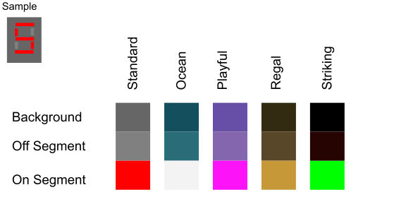

Class DigitalTimer
- java.lang.Object
-
- greenfoot.Actor
-
- DigitalTimer
-
public class DigitalTimer extends greenfoot.ActorA simple digital timer widget made using the 7-segment display. The timer counts down from a given number of seconds (default:60 sec),with a maximum possible number of digits displayed being 5, and the maximum number being 99999. The timer can be reset to the number of seconds it was initialized with, or it can add or subtract the amount of seconds it counts down from, from a maximum of 10number of digits (e.g. if there are 4 possible digits on the display, the maximum number is 9999) to 0. The volume of the alarm can be adjusted from 0-100, and the timer colour themes can be chosen from any of the five below:
Alarms for each theme with credits:
Standard: Youtube Link (00:10 - 00:12), Author: Time Taker
Ocean: Umi to Shounen (02:05 - 02:24), Artist: Anzen Chitai
Playful: Temptation'82 (00:00 - 00:15), Artist: New Order
Regal: Lonely No More (00:00 - 00:16), Artist: Rob Thomas
Striking: Electric Feel (00:00 - 00:15), Artist: MGMT
- Version:
- Nov 2021
- Author:
- Katelyn Lam
-
-
Constructor Summary
Constructors Constructor Description DigitalTimer()Default constructor for timer.DigitalTimer(int num, int theme, int volume)Customizable constructor for timer, with selectable theme, countdown number, and volume.
-
Method Summary
All Methods Instance Methods Concrete Methods Modifier and Type Method Description voidact()Counts down from initialized value (60 for basic timer, user inputted option for complex timer) to 0 by retrieving number of milliseconds since Jan 01, 1970 to find the elapsed time, and refreshing timer screen every 1s passed.intgetNumCyclesLeft()Gets the number of seconds left on the timer since the timer has startedvoidstart()Starts timer countdownvoidstop()Stops timer and displays time it stopped atvoidturnOffAlarm()Turns off alarm when it is sounding, which is when the timer has finished counting downvoidupdate()Restarts timer to original time it was initialized withvoidupdate(int numAddedCycles)Adds a given number of cycles, as an integer for timer to count down.-
Methods inherited from class greenfoot.Actor
addedToWorld, getImage, getIntersectingObjects, getNeighbours, getObjectsAtOffset, getObjectsInRange, getOneIntersectingObject, getOneObjectAtOffset, getRotation, getWorld, getWorldOfType, getX, getY, intersects, isAtEdge, isTouching, move, removeTouching, setImage, setImage, setLocation, setRotation, turn, turnTowards
-
-
-
-
Constructor Detail
-
DigitalTimer
public DigitalTimer()
Default constructor for timer. Creates a timer that counts down 60s with standard theme colours, and volume of 80.
-
DigitalTimer
public DigitalTimer(int num, int theme, int volume)Customizable constructor for timer, with selectable theme, countdown number, and volume.- Parameters:
num- number timer counts down from. Maximum possible value of num is 99999.theme- selected theme for the timer (selected pairing of colours and sound). See the chart above for themes.thememust be an integer from 0 - 4, to select the following themes:0 - standard, 1 - ocean, 2 - playful, 3 - regal, 4 - striking
volume- volume of alarm, an integer from 0 (off) - 100 (maximum volume)
-
-
Method Detail
-
act
public void act()
Counts down from initialized value (60 for basic timer, user inputted option for complex timer) to 0 by retrieving number of milliseconds since Jan 01, 1970 to find the elapsed time, and refreshing timer screen every 1s passed. Note: there is an allowable margin of error of +/- 0.01s every time "1s" has been elapsed before the timer refreshes. (Thank you Mr. Cohen for helping me on this one.)- Overrides:
actin classgreenfoot.Actor
-
start
public void start()
Starts timer countdown
-
stop
public void stop()
Stops timer and displays time it stopped at
-
update
public void update()
Restarts timer to original time it was initialized with
-
update
public void update(int numAddedCycles)
Adds a given number of cycles, as an integer for timer to count down.- Parameters:
numAddedCycles- number of cycles added to extend the timer. If is negative, that time is subtracted from the number of cycles counted. If the amount of extended time exceeds the cap (60 for simple timer, 10number of digits - 1 for complex timer), then resets timer to cap. Otherwise, ifnumAddedCycleswhen subtracted from the current number of act cycles is less than 0, the timer is set to 0.
-
getNumCyclesLeft
public int getNumCyclesLeft()
Gets the number of seconds left on the timer since the timer has started- Returns:
- int number of seconds that is left since timer has started. Must be less than number of cycles initialized.
-
turnOffAlarm
public void turnOffAlarm()
Turns off alarm when it is sounding, which is when the timer has finished counting down
-
-